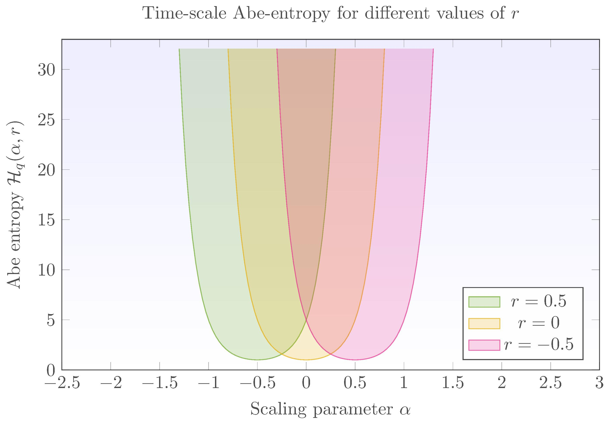

Entropías generalizadas
Para el análisis de señales $1/f^{\alpha}$
Dr. Julio César Ramírez-Pacheco
Contenido
- Introducción, motivación y objetivos.
- Procesos con invarianza en escala.
- Análisis wavelet de procesos $1/f^{\alpha}$.
- Entropias extensivas y no extensivas wavelet.
- La entropia Abe wavelet para procesos $1/f^{\alpha}$.
- Aplicaciones y conclusiones.
Introducción y motivación
- Los procesos con invarianza en escala o procesos $1/f^{\alpha}$ aparecen en diversos campos de la ciencia.
- Secuencias de DNA, tráfico de redes, flujos turbulentos, tiempo de inter-latido, estado de ánimo, etc.
- Una forma de caracterizar estos procesos es mediante el valor del parámetro $\alpha$.
- El proceso de estimación no es trivial y se requieren técnicas más elaboradas cuando existen cambios de nivel, no-estacionariedades, etc.
Introducción y Motivación: Cont.
- Basado en lo anterior, el objetivo de la presente plática es mostrar el potencial de las entropias wavelet para mejorar el proceso de estimación
- De igual forma, las propiedades de estas entropias sugieren otras aplicaciones para el análisis de procesos $1/f^{\alpha}$.
- La presente plática se centra en la familia de entropias Abe wavelet.
Ejemplo: cancer de riñon
Ejemplo: Series de la caminata
Objetivos
- Presentar las características de las entropias wavelet para procesos $1/f^{\alpha}$, en particular la entropia Abe wavelet
- Obtener los planos de información (entropias versus $\alpha$) de la entropia Abe para procesos $1/f^{\alpha}$
- Mostrar las ventajas de utilizar una energía wavelet relativa (RWE) ponderada y su efecto en los planos de información.
Procesos con invarianza en escala
Sea $(X_t)_{t \in \mathbb{R}}$ una señal aleatoria de valores reales, se dice que $X_t$ es un proceso
con invarianza en escala (también llamado proceso $1/f^{\alpha}$) de índice $\alpha$ si su densidad
espectral de potencia (PSD) $\{\Gamma(\nu), \nu \in (A,B)\}$ satisface:
$$
\Gamma_{X}(\nu) \sim c_\gamma |\nu|^{-\alpha}
$$
Dependiendo de $A$, $B$ y $\alpha$, se pueden obtener varios procesos conocidos.
Procesos FGN


Procesos FBM

Análisis wavelet de señales $1/f$
Sea $(X_t)_{t \in \mathbb{R}}$ un proceso aleatorio de valores reales, entonces su transformada discreta wavelet (DWT), $d_X(j,k)$ está dada por: $$ d_X(j,k) = 2^{-j/2} \int_{\mathbb{R}}{X_t \psi(2^{-j}t-k) dt} $$
Para procesos fractales se tiene: $$\mathbb{E}|d_x(j.k)|^2 = 2c_H^2 2^{-j \alpha} \int_{0}^{\infty}{\nu^{\alpha} |\Psi(\nu)|^2} d\nu$$
Análisis wavelet de señales: Cont.
- Utilizando el concepto de energía promedio dado por: $$ \mathcal{E}_j = \frac{1}{N_j}\sum_{k}{\mathbb{E}_j|d_x(j,k)|^2} = \mathbb{E}|d_X(j,k)|^2$$
- Finalmente, la energía wavelet relativa (RWE), que representa un función de probabilidad está dada por: $$ p_j = \frac{\mathcal{E}_j}{\mathcal{E}_{tot}} = 2^{(j-1)\alpha} \frac{1-2^{\alpha}}{1-2^{\alpha N}} $$
Ejemplo: wavelets
Ejemplo: wavelets
Entropia wavelet extensiva
Usando la formula de Shannon, la entropia wavelet resulta en: $$ \mathcal{H}_S (p_j) = \frac{1}{\log_2(N)} \left\{ \frac{\alpha}{1-2^{-\alpha}}-\frac{\alpha N}{1-2^{-\alpha N}} - log_2(\frac{1-2^{\alpha}}{1-2^{\alpha N}})\right\} $$
Renyi: $$ \mathcal{H}_R (p_j) = \frac{q}{q-1} \left\{ \log2(\frac{1-2^{\alpha}}{1-2^{\alpha N}})-\frac{1}{q}\log_2(\frac{1-2^{\alpha q N}}{1-2^{\alpha q}})\right\} $$
Entropia wavelet
Entropia wavelet no-extensiva
La entropia wavelet de Tsallis está dada por: $$ \mathcal{H}_q^T (p_j) = \frac{1}{1-N^{1-q}} \left\{ 1-\left(\frac{1-2^{\alpha}}{1-2^{\alpha N}}\right)^q\left(\frac{1-2^{\alpha qN}}{1-2^{\alpha q}}\right)\right\} $$
La entropia wavelet $(q,q')$: $$ \mathcal{H}_{(q,q')}(p_j) = \mathcal{H}_q^T(p_j)\frac{1-N^{1-q}}{N^{1-q}-N^{1-q'}}- \mathcal{H}_q^T(p_j)\frac{1-N^{1-q'}}{N^{1-q}-N^{1-q'}} $$
Wavelet de Tsallis, $q=8$
Wavelet de Tsallis, $q=3$
Wavelet de Tsallis, $q=-0.1$
Entropias wavelet de un parámetro.
- Útiles para analizar procesos con interacciones de largo plazo, sistemas no-lineales, procesos fractales, etc.
- Utilizado para el análisis de series temporales en su versión en el dominio del tiempo.
- En su versión wavelet se utiliza para detectar cambios de nivel, señales fractales estacionarias y no estacionarias, clasificación de señales cerebrales MRI, detección de insuficiencia caradiaca congestiva, etc.
Wavelet $(q,q')$, $q=13$
Wavelet $(q,q')$, $q=7$
Entropias de dos parámetros
- Proveen mayor flexibilidad en el análisis de señales.
- Los rangos de variación de las entropias son más extrechas, lo que permiten distinguir diversos procesos fractales.
- Con el empleo de una RWE ponderada, es decir, $$ \hat{\mathcal{E}}_j = \sum_{k}{\mathbb{E}|d_x(j,k)|^2} = N_j\mathbb{E}|d_x(j,k)|^2 $$ y $N_j = 2^{jr}$, se pueden analizar más procesos.
Efecto del valor $r$
Aplicaciones y conclusiones
Aplicaciones y conclusiones: Cont.
Aplicaciones y conclusiones
- La entropias definidas en el dominio tiempo-escala permiten analizar de manera eficiente procesos con invarianza en escala.
- Mediante el uso de entropias no-extensivas en el dominio wavelet se pueden clasificar señales fractales en casi cualquier rango del parámetro $\alpha$
- Además las entropias definidas en el dominio tiempo-escala son rápidas aún en series temporales que consisten en millones de observaciones.